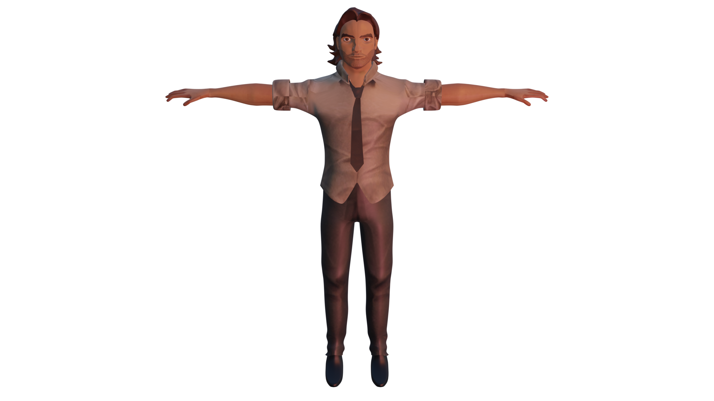
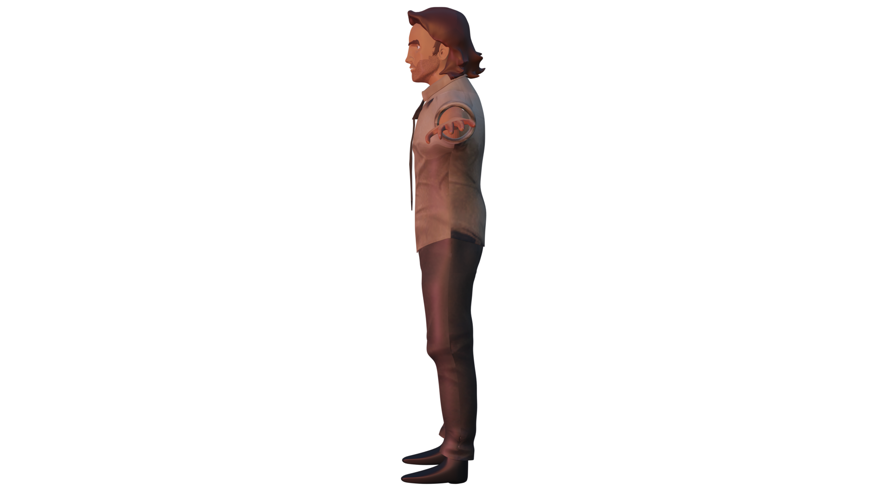
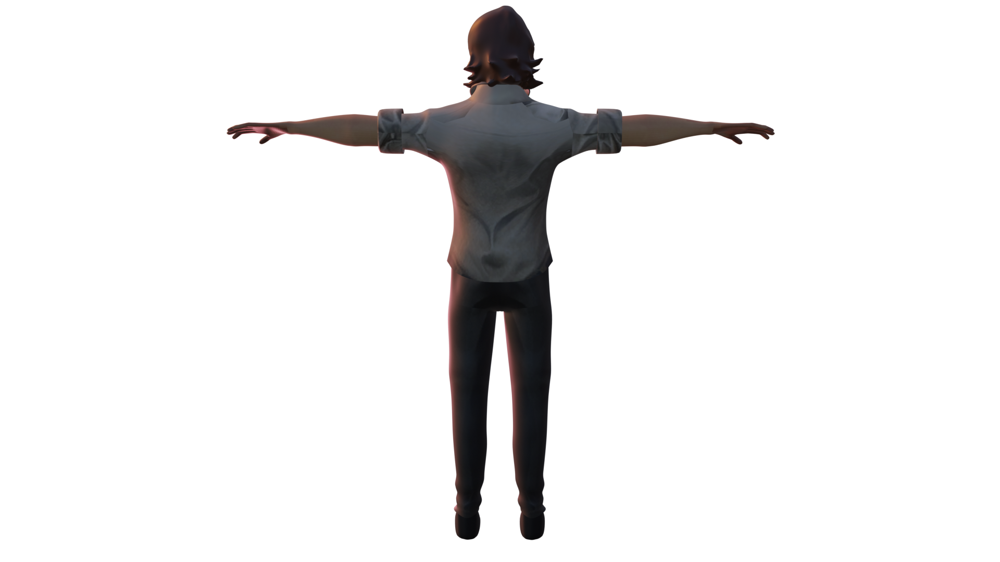
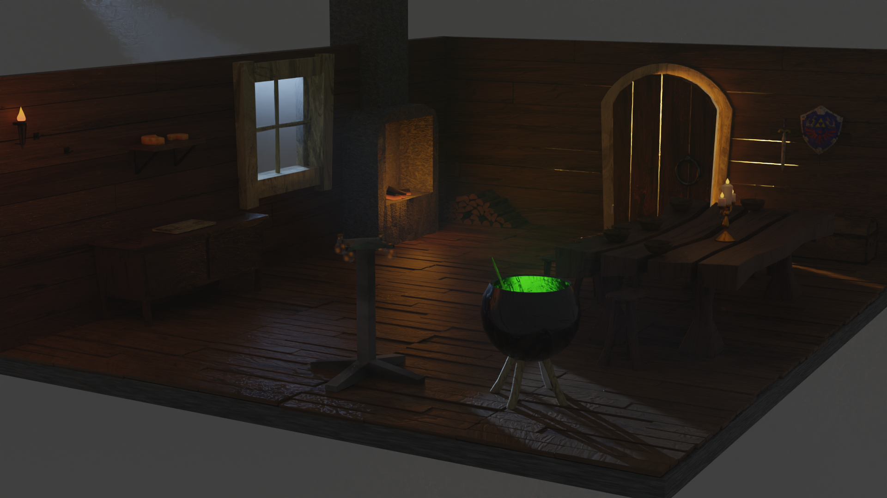

3D
Semaine 3
Modélisation d'un personnage
Je devais modéliser Bigby Wolf, personnage principal du jeu "The Wolf Among Us".



Semaine 2
Texturing et Rendu d'un décor
Pour cette semaine, je devais reprendre le décor que j'ai réalisé en semaine 1 et le texturer ainsi que réaliser un rendu, avec un jeu de lumière.

Semaine 1
Modélisation d'un décor
Le décor se trouve juste au dessus, je ne pense pas que cela soit utile de le montrer une deuxième fois. Cependant je peux fournir les dossiers blender du décor et de chaque objet créé séparément notamment le bouclier et l'épée de link, un coffre et Lumière du film "La Belle et la Bête".